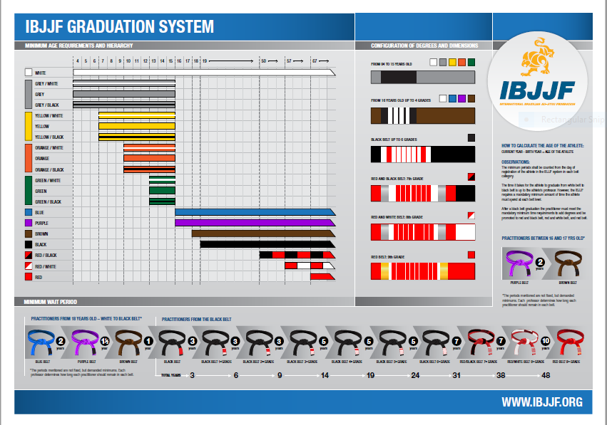

The system
The Brazilian Jiu-Jitsu belt system is far stricter than in most other martial arts. Progressing to black belt typically takes over a decade of consistent training — there are no shortcuts, and no belt is ever bought.
ROOTS BJJ grades under the International Brazilian Jiu-Jitsu Federation (IBJJF) general system of belt graduation, which sets clear guidelines on progression, minimum ages and time at each rank. Between belts, up to four stripes mark your progress.
Kids (4–15) progress through their own IBJJF ladder — grey, yellow, orange and green belt groups — before entering the adult ranks at sixteen.
A belt covers two inches of your body. You have to cover the rest.
Because whoever grades you carries your name forward, our standard never bends — read why lineage matters.

The adult ladder
-
White
Where everyone starts. Survival, escapes, and falling in love with the art.
-
Blue
Minimum age 16. The fundamentals are in place — now the real study begins.
-
Purple
The halfway mark. Your game takes shape, and you start guiding others.
-
Brown
Refinement. Sharpening every position on the way to mastery.
-
Black 1st – 6th degree
A decade or more of dedication — and the beginning, not the end, of the journey. Professor Paulo holds the 6th degree.
-
Coral — red & black 7th degree
Awarded after roughly 31 years at black belt. The rank where a practitioner becomes a master.
-
Coral — red & white 8th degree
Around seven more years on from the 7th. Very few belts in the world reach here.
-
Red 9th – 10th degree
The highest rank in Brazilian Jiu-Jitsu. The 10th degree was reserved for the art’s founders — the Gracie brothers.
Between every belt, up to four stripes mark your progress. Kids (4–15) climb their own IBJJF ladder — grey, yellow, orange and green — before entering the adult ranks at sixteen.